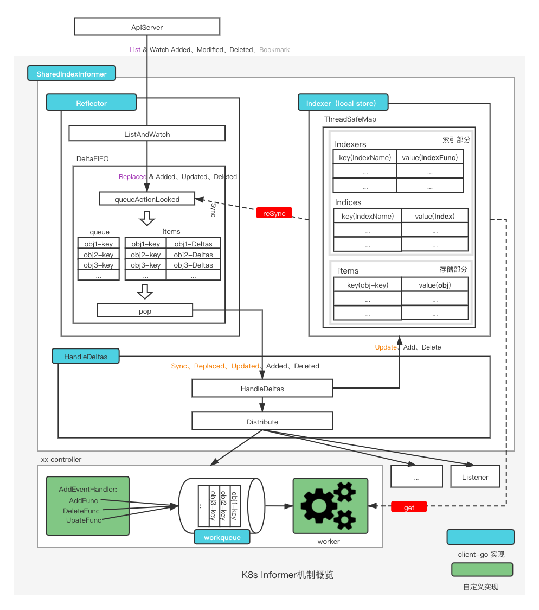
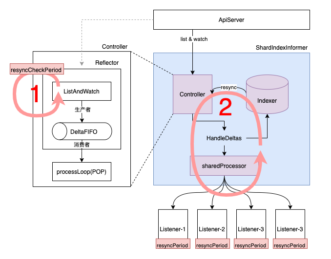
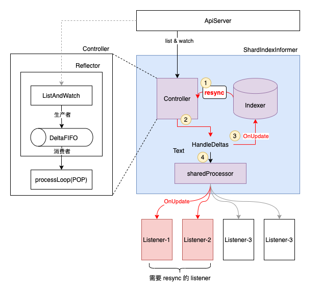
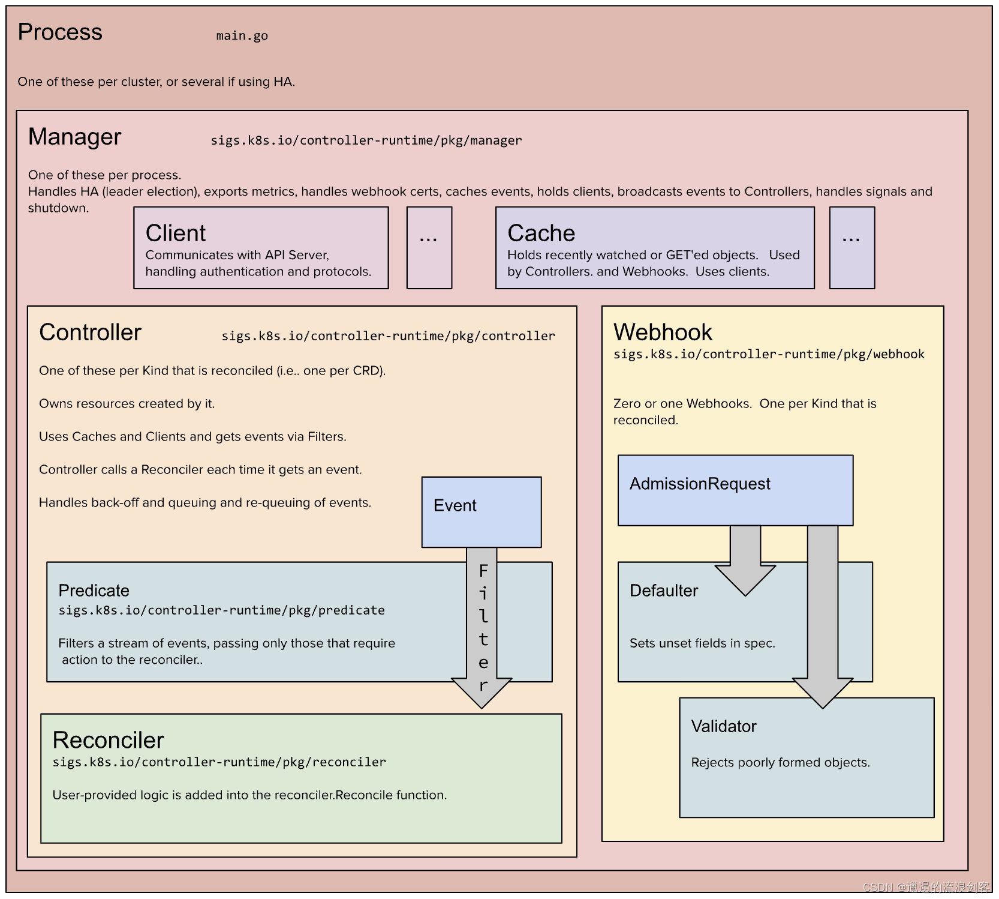

K8s
参考：
k8s.io/client-go
client-go 的 ListWatch/informer 接口， 默认已经设置了
ResourceVersion=0，走 apiserver 的缓存，否则会走 etcd 获取；

Informer
Informer被设计实现为一个依赖Kubernetes List/Watch API、可监听事件并触发回调函数的二级缓存工具包。
- 更快地返回
List/Get请求的结果、减少对Kubenetes API的直接调用
Informer实例的Lister()方法，List/Get Kubernetes中的Object时，Informer不会去请求Kubernetes API，直接查找缓存在本地内存中的数据。
封装list-watch API，用户只需要指定资源，编写事件处理函数，AddFunc,UpdateFunc和DeleteFunc等。
- 针对 Update 场景，可以拿到 old 和 new 的对象；
- list-watch 如果出错后，会再次调用 list-watch；
二级缓存DeltaFIFO和Indexer(LocalStore)
DeltaFIFO用来存储Watch API返回的各种事件LocalStore只会被Lister的List/Get方法访问
sharedIndexInformer
实现了 SharedIndexInformer 接口。
一个资源只实例化一个Informer，后续所有的Listener都共享这一个Informer实例，通过 工厂模式+map+lock 实现。
Reflector
远端（APiServer）和本地（DeltaFIFO、Indexer、Listener）之间数据同步逻辑的核心，通过ListAndWatch方法来实现。
流程 sharedIndexInformer->controller->reflector，因此一个informer就有一个Reflector。
- ListWatcher
- store(DeltaFIFO)
List-Watch机制
Etcd存储集群的数据信息，apiserver作为统一入口，任何对数据的操作都必须经过apiserver。
- api server 对外提供 HTTP 服务；
- 客户端（kubelet/scheduler/controller-manager）通过
list-watch监听资源的create, update, delete事件；
List：全量数据
Watch：增量数据，同时存在 HTTP 1.1 和 Websocket 的实现
- Http Transfer-Encoding: chunked，通过
curl进行 watch；
如何保证同一个资源的变化事件的顺序性？
- TODO：基于 etcd 的 watch 机制，由 etcd 保证？
DeltaFIFO
字段 knownObjects 为 Indexer 实例（cache 结构体）
Reflector中存储待处理obj(确切说是Delta)的地方，存储本地最新的数据，提供数据 Add、Delete、Update方法，以及执行 relist 的Replace方法
- 每一个Delta包含一个操作类型（"Added"/"Updated"/"Deleted"/"Replaced"/"Sync"）和操作对象
Indexer
存储类型的接口Store 和 索引类型的接口，其实现类为
cache。
本地最全的数据存储，提供数据存储和数据索引功能。
索引原理解析：
Indexers: type Indexers map[string]IndexFunc
IndexFunc: type IndexFunc func(obj interface{}) ([]string, error)
Indices: type Indices map[string]Index
Index: type Index map[string]sets.String
// cache struct 中根据 obj 计算 key，一般采用 namespaced/name（对于同一种Resource，其唯一）
keyFunc: type KeyFunc func(obj interface{}) (string, error)
graph LR
Indexers --根据 name 获取索引函数--> IndexFunc
IndexFunc --"根据 (obj interface{})计算 indexValues"--> indexValue["[]string"]
KeyFunc --"根据obj 计算 key（唯一）"--> string --map 根据key获取 obj--> obj
Indices --根据名称获取索引集合--> Index
Index --"根据 indexValue 获取obj key"--> sets.string
Listener
AddEventHandler 或 AddEventHandlerWithResyncPeriod 注册 listener，sharedIndexInfomer中的sharedProcessor会将其添加到listeners和syncingListeners。DeltaType和syncingListeners` 列表中，当 HandleDeltas 处理DeltaFIFO中的Delta时，进行事件派发：
- 派发给
listeners：DeltaType为Added、Updated、Deleted、新旧资源版本号不一致的Replaced - 派发给
syncingListeners：DeltaType为Sync、新旧资源版本号一致的Replaced
Controller
workqueue
Listener通过回调函数接收到对应的event之后，需要将对应的obj-key放入workqueue中，从而方便多个worker去消费。
queue、dirty、processing三个结构，其中queue为slice类型保证有序性，dirty 与 processing 为 map，提供去重属性。
优势：
- 并发：支持多生产者、多消费者
- 去重：由dirty保证一段时间内的一个元素只会被处理一次
- 有序：FIFO特性，保证处理顺序，由queue来提供
- 标记：标示元素是否正在被处理，由processing来提供
- 延迟：支持延迟队列，延迟将元素放入队列
- 限速：支持限速队列，对放入的元素进行速率限制
- 通知：ShutDown告知该workqueue不再接收新的元素
Informer 中的数据流向
Apiserver侧为最权威的数据、DeltaFIFO为本地最新的数据、Indexer为本地最全的数据、Listener为用户侧做逻辑用的数据。
远端通路
远端(ApiServer) ⇔ 本地(DeltaFIFO、Indexer、Listener)
Reflector的ListAndWatch方法将 ApiServer 侧的 obj 同步到本地 DeltaFIFO 中
- 通过
List行为产生的同步行为，这类event的 DeltaType 为Replaced，同时只有在 Reflector 初始启动时才会产生； - 通过
Watch行为产生的同步行为，对于watch到的Added、Modified、Deleted类型的event，对应的DeltaType为Added、Updated、Deleted。
当对应event的Delta放入DeltaFIFO之后，就通过HandleDeltas 方法，将对应的 Delta 更新到 Indexer 和 Listener 上。
本地通路
本地(DeltaFIFO、Indexer、SyncingListener）之间同步
通过Reflector的ListAndWatch方法中运行一个goroutine来执行定期的Resync操作。
- 通过
ShouldResync函数计算出syncingListener，之后其中的 store.Resync 从 Indexer 拉一遍所有objs到 DeltaFIFO，其中的Delta为Sync状态； - 如果 DeltaFIFO 的items中存在该obj，就不会添加该obj的 sync delta。
之后HandleDeltas就会同步DeltaFIFO中的Sync Delta给 syncingListeners和 Indexer。
当然这个过程中，别的状态的delta会被通知给所有的listener和Indexer。
Informer中的resync
k8s-club/articles/Informer机制 - Resync.md at main · k8s-club/k8s-club (github.com)
Informer和Kubernetes之间没有resync机制，但Informer内部的这两级缓存之间存在resync机制。
resync将Indexer(LocalStore)中的对象，全部发送到DeltaFIFO的队列中；
几种 resync 时间参数设置：
NewSharedInformerFactory中的defaultResync参数NewSharedInformerFactoryWithOptions中针对不同的 Resource 的 Resync 时间- 不同的 Listener（eventHandler）自定义如下所示的 resyncPeriod
// 1. defaultResync -> 200 ms
factory := informers.NewSharedInformerFactory(kubeClient, 200 * time.Millisecond)
// 2. Pod Resync -> 1 s
sharedInformerFactory := informers.NewSharedInformerFactoryWithOptions(kubeClient, 200*time.Millisecond,
informers.WithCustomResyncConfig(map[metav1.Object]time.Duration{
&v1.Pod{}: 1 * time.Second,
}))
// 3. event handler resync period
podInformer.Informer().AddEventHandlerWithResyncPeriod(cache.ResourceEventHandlerFuncs{
AddFunc: nil,
UpdateFunc: nil,
DeleteFunc: nil,
}, 3 * time.Second)
Resync 流程
下图展示了整个 informer 机制的流程，对于 ShardIndexInformer 而言，主要涉及 3 个组件：
- Controller：一方面使用 Reflector中的ListerWatcher 从 ApiServer 拿取最新的事件（对象），并放入 DeltaFIFO 中，另一方面不停的 POP DeltaFIFO 中的对象。所有 POP 出来的 Deltas 事件都会被 ShardIndexInformer 内的 HandleDeltas 处理。
- Indexer：本地带索引的存储，通过 list & watch 机制实时同步 ApiServer 测更新的数据。通过访问 Indexer 而不是直接访问 ApiServer，一方面能够极大的减轻 ApiServer 的访问压力，另一方面能够加快数据访问速度。
- sharedProcessor：维护该 Infromer 上所有添加的 Listener，并负责将从 DeltaFIFO 中 POP 出的事件通知给所有的 Listener。这里有 2 种事件通知方式，对于 Sync 类型的事件只通知给需要 syncing 的 Listener。对于其余类型的事件，通知给所有的 Listener。（NOTE：这里的 Sync 事件是指 old 和 new 对象的 resourceVersion一致，包括 Sync/Replaced Delta 类型）

整个 resync 的流程，从逻辑上来说分为如上图所示的2层循环，其中第二层循环通过第一层循环来驱动，具体如下：
第一层循环
在 Controller（Reflector）的 ListAndWatch 内部周期性执行，具体的执行周期 resyncCheckPeriod 通过 NewSharedInformerFactory 为所有资源的 informer 设置默认值，可选的通过 NewSharedInformerFactoryWithOptions 来为某个资源设置特定的值。
- 定期遍历所有 listener 来查看是否需要真正启动 resync 流程，驱动第二层循环（只要一个 listener 需要 resync，则驱动）；
- 每个 listener 都有自己的
resyncPeriod时间（默认不填等于NewSharedInformerFactory的defaultResync）；
第二层循环

- 从 Indexer 中遍历所有的 Obj，并将当前没在DeltaFIFO 中出现的 Obj 放入 DeltaFIFO 中
- HandleDeltas 不停的处理从 DeltaFIFO 中 POP 出 Deltas
- 使用 OnUpdate 方式，更新至 Indexer （需要说明，这个OnUpdate是没有副作用的，所以可以无限重入，符合 resync 的场景）
- 将 Sync 事件分发给对应需要同步的 Listener。这部分由 sharedProcessor 来负责完成，其内部会维护所有 listener 当前是否需要同步的状态（这个状态计算在第一层循环中完成）。如图中的 Listener-1，Listener-2。（说明：Sync 事件最终反应到 Listener 的
OnUpdateeventHandler 中）
不同 resync 时间说明
resyncCheckPeriod ：reflector 定期检查是否需要同步的时间间隔；
resyncPeriod ：每个 listener 用于判断自己是否需要同步的时间间隔；
约束：
- resyncPeriod 不能小于 1s；
- resyncPeriod 最终的结果 >= resyncCheckPeriod；
resync 的用途
针对场景：请求外围系统，并将外围系统的状态推动到目标状态
- 外围系统的变更，K8s不会感知，只能通过轮询（Resync）对象，并查看外围系统的状态保证一致；
- 例如定义CRD描述云磁盘，但被用户无意删掉，通过 Resync 机制，保证再查看对象时，发现其对应磁盘不在；
- 让 listener 能够定期 reconcile Indexer 内的所有事件，来保证对应事件关心的对象（可能是系统内，也可能是系统外）状态都是预期状态；
- 对于外围系统的人为修改，定时 resync 可以保证外围系统状态能够一直保持与 listener 内的预期状态一致；
k8s.io/apimachinery
apimachinery 解决的是 kubernetes 的 API Object 的 Scheme, typing, encoding, decoding, and conversion问题。
This library is a shared dependency for servers and clients to work with Kubernetes API infrastructure without direct type dependencies. Its first consumers are k8s.io/kubernetes, k8s.io/client-go, and k8s.io/apiserver.
sigs.k8s.io/controller-runtime
Repo for the controller-runtime subproject of kubebuilder (sig-apimachinery)
a set of go libraries for building Controllers, leveraged by Kubebuilder and Operator SDK.

- Controller 会先向 Informer 注册特定资源的 eventHandler；
- Cache 会启动 Informer，Informer 向 ApiServer 发出请求，建立连接；
- Informer 检测到有资源变动后，使用 Controller 注册进来的 eventHandler 判断是否推入队列中；
- 当队列中有元素被推入时，Controller 会将元素取出，并执行用户侧的 Reconciler；
ctrl.NewManager(controllers.GetConfigOrDieWithQPSAndBurst(kubeClientQPS, kubeClientBurst), ctrl.Options{
Scheme: scheme,
MetricsBindAddress: metricsAddr,
LeaderElection: enableLeaderElection,
LeaderElectionNamespace: leaderElectionNamespace,
LeaderElectionID: "dataset.data.fluid.io",
Port: 9443,
NewCache: cache.BuilderWithOptions(cache.Options{
Scheme: scheme,
// 针对 CronJob ，只list-watch 特定 label的 CronJob
SelectorsByObject: cache.SelectorsByObject{
&batchv1.CronJob{}: cache.ObjectSelector{Label: labels.SelectorFromSet(labels.Set{
common.JobPolicy: common.CronPolicy,
})},
}),
NewClient: controllers.NewFluidControllerClient,
})
Cache
负责在 Controller 进程里面根据 Scheme 同步 Api Server 中所有该 Controller 关心 GVKs 的 GVRs，其核心是 GVK -> Informer 的映射，Informer 会负责监听对应 GVK 的 GVRs 的创建/删除/更新操作，以触发 Controller 的 Reconcile 逻辑。
Controller
脚手架文件，我们只需要实现 Reconcile 方法即可。
Clients
通过该 Clients 对某些资源类型进行创建/删除/更新，查询功能实际查询是本地的 Cache，写操作直接访问 Api Server。
Index
由于 Controller 经常要对 Cache 进行查询，Kubebuilder 提供 Index utility 给 Cache 加索引提升查询效率。
OwnerReference
K8s GC 在删除一个对象时，任何 ownerReference 是该对象的对象都会被清除，与此同时，Kubebuidler 支持所有对象的变更都会触发 Owner 对象 controller 的 Reconcile 方法。